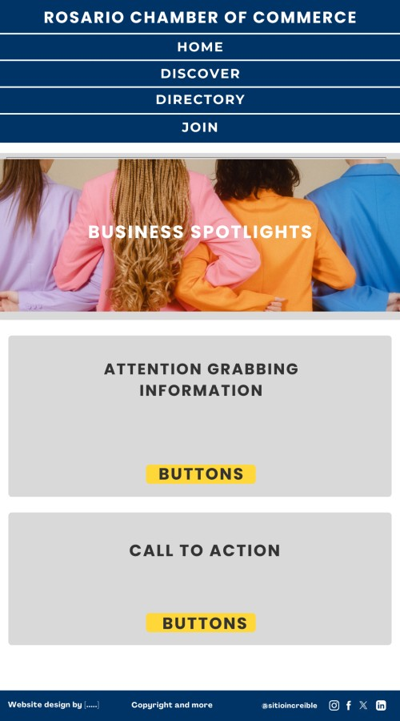
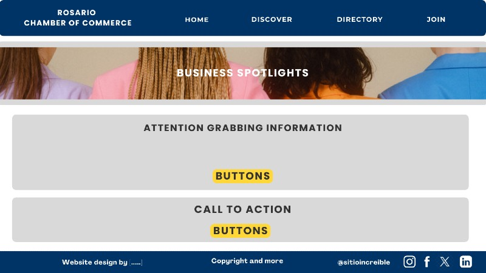

Site Name
The site name will be "Rosario Chamber of Commerce" because it represents the businesses and community of Rosario, Argentina.
Site Purpose
The purpose of this website is to:
- Promote local businesses and economic growth in Rosario.
- Provide information on business networking opportunities.
Scenarios
- What business networking events are happening this month?
- Where can I find a list of local businesses that are members?
- How can my business benefit from joining the Chamber?
Color Schema
- Primary Color (#003366): Used for headers and navigation.
- Secondary Color (#d9d9d9): Used for section backgrounds and highlights.
- Accent Color (#ffd739): Used for buttons and important call-to-action elements.
- Text Color (#333333): Used for body text.
- Background Color (#FFFFFF): Used for the main background and for header and footer text.
Typography
- Headings: "Poppins", sans-serif.
- Body Text: "Roboto", sans-serif.
- Navigation & Buttons: "Montserrat", sans-serif.
Wireframe
Below are simple wireframe sketches for mobile and desktop views of the homepage.
Mobile View:
Desktop View:
